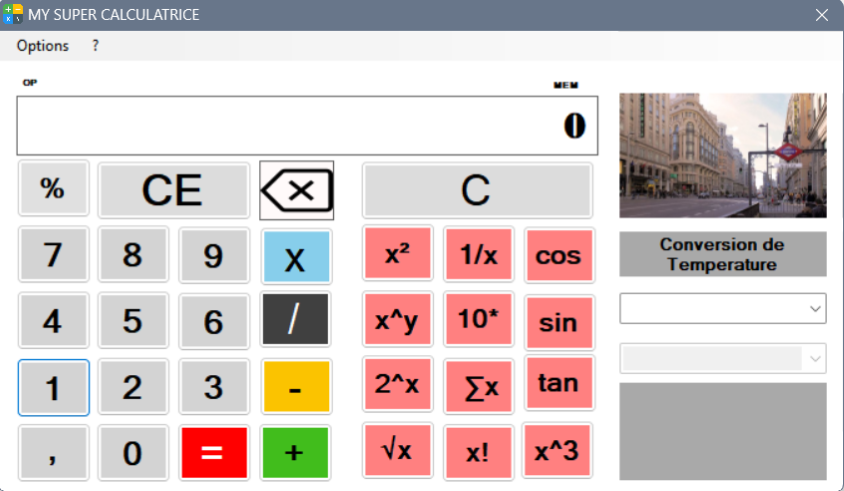
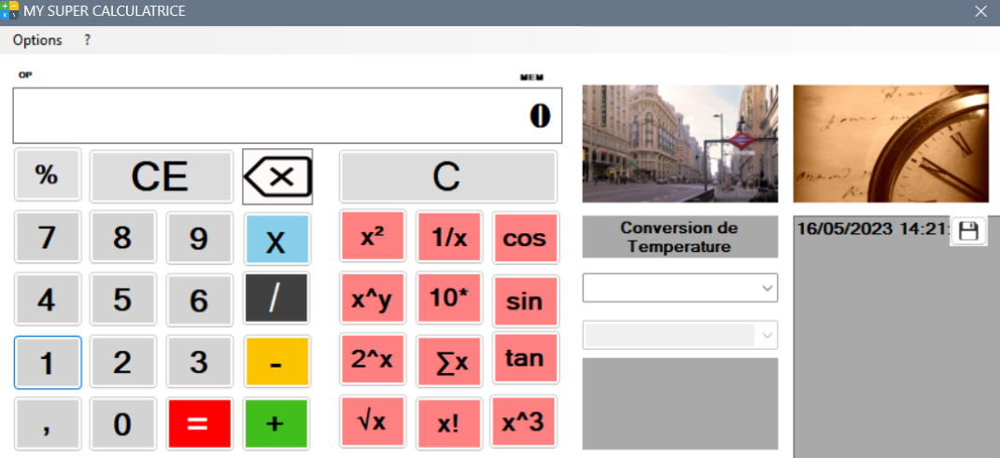

La calculatrice MYSUPERCALCULATOR est une application développée en VB.NET qui offre des fonctionnalités avancées de calcul. Elle permet d'effectuer des opérations mathématiques telles que l'addition, la soustraction, la multiplication et la division.
Cette calculatrice conviviale dispose d'une interface utilisateur simple et intuitive. Il suffit de saisir les nombres dans les champs de texte appropriés et de cliquer sur le bouton correspondant à l'opération souhaitée pour obtenir le résultat.
Les fonctionnalités clés de MYSUPERCALCULATOR incluent :
Que vous ayez besoin de faire des calculs simples ou complexes, MYSUPERCALCULATOR est l'outil idéal pour vous accompagner dans vos tâches quotidiennes ou vos projets mathématiques plus avancés.
La calculatrice est développée en utilisant la plateforme VB.NET, ce qui garantit une performance optimale et une compatibilité avec les systèmes d'exploitation Windows.
Pour commencer à utiliser MYSUPERCALCULATOR, il vous suffit de saisir les nombres dans les champs de texte appropriés. Ensuite, sélectionnez l'opération souhaitée en cliquant sur le bouton correspondant. Le résultat s'affichera instantanément à l'écran.
N'hésitez pas à utiliser MYSUPERCALCULATOR pour effectuer vos calculs quotidiens, résoudre des équations ou réaliser des opérations mathématiques complexes. Cette calculatrice avancée est conçue pour vous offrir précision, rapidité et facilité d'utilisation.